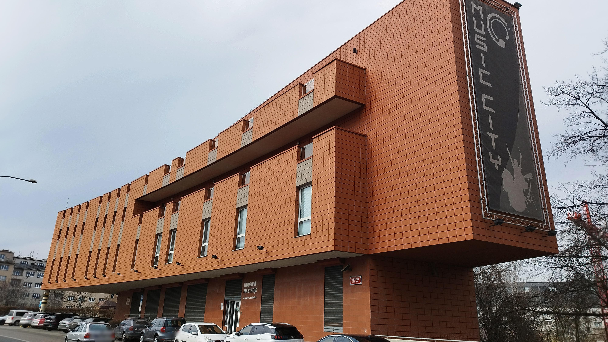
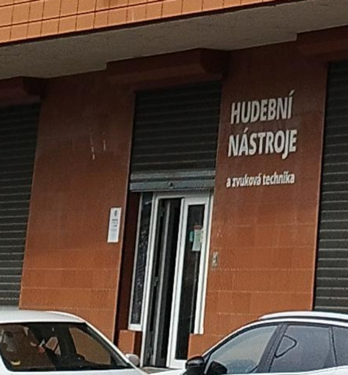

Svatební koncert bude v Music City Clubu ve 2. patře prodejny hudebních nástrojů Music City (Ocelářská 937). Jak se tam dostat dobře popisuje web Notování. Do budovy vstupte vchodem na dlouhé straně budovy (z ulice), který vidíte na fotce níže a bude označen cedulkou. Následně vystoupejte do druhého patra po schodech či výtahem.
 Koncert začne v 17:00, přijít můžete už okolo 16:30, abyste se stihli pohodlně usadit a třeba si dát první pivo či polévku.
Na svatebním koncertě zahrají naše oblíbené kapely a písničkáři: Choroši, Jerry, Žamboši a Honza Jícha.
Po skončení koncertu následuje jam session až do pozdních ranních hodin. Budeme rádi, když se přinesete své hudební nástroje a zazpíváte si s námi folkové i jiné písničky. Klub máme zamluvený až do sobotního poledne, takže prostor na společné jamování bude dost a dost 🙂.
Předběžný orientační program (teprve si budeme line-up potvrzovat s kapelami):
Občerstvení bude částečně samozajištěné. Na baru bude možnost si objednat nápoje. Pro všechny bude zdarma polévka (kulajda) a nějaké chlebičky od Aniččiné maminky. Můžete také nějaké občerstvení přinést pro sebe i pro ostatní, třebas něco upéct a tak podobně; pokud máte v plánu něco chystat, domluvte se prosím s námi!
Jde o poklidnou poslechovou akci, na které budete mít příležitost si poslechnout naše oblíbené kapely.
Bude samozřejmě i možnost si prostě popovídat, a to jednak v přestávkách, jednak ve vedlejší místnosti. Vlastní koncert ale prosím svým povídáním nerušme.
Večer bude moderovat Anička s Rudou. Vybrali jsme si kapely, které jsou pro nás důležité, a tak se spíš než oficiality dozvíš, co nás s těmito hudebníky a jejich písničkami pojí 🙂
Jestli jsi o žádné z kapel nikdy neslyšel*a a chceš si radši okouknout, o čem to bude, tak mrkni třeba sem:
Kontaktní osobou nejspíš bude Anička Šusová (775266264).
Zastávka autobusů a metra B Českomoravská, případně tramvajová zastávka Poliklinika Vysočany
Koncert je součástí našeho svatebního týdne. Zveme na něj své kamarády, protože je chceme pozvat. Neprodáváme vstupenky a nevybíráme vstupné. Udeláš nám největší radost tím, že přijdeš a budeš s námi poslouchat naše oblíbené hudebníky (a nebudeš u toho mluvit ani dělat jiný hluk). To je největší dar, nic víc od tebe nechceme.
Pokud opravdu chceš, můžeš nám finančně přispět formou svatebního daru na bankovní účet 184310459/0600 (můžeš načíst QR kód bankovní appkou), popřípadě hotově na místě.
Peníze jsou dost neosobní, proto je udělejme osobnější! Zkus nám darovat takovou částku, která vyjadřuje něco, co nějak souvisí se vztahem, který s námi máš.
Například:
A samozřejmě nám dej například ve zprávě pro příjemce vědět, co tato částka vyjadřuje :-)
Ale fakt nám žádné peníze dávat nemusíš.
Ohledně koncertu nás ideálně kontaktuj na svatebním e-mailu svatba@nikde.eu, to čteme oba. Případně piš přes Messenger či WhatsApp. Pokud radši telefonuješ, můžeš zavolat Aniččce na číslo 737 880 716.
Během koncertu nám prosím nevolej. Na telefonu bude během koncertu Anička Šusová: 775266264.